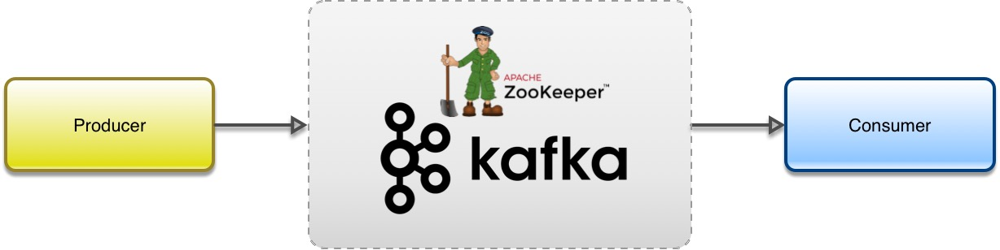
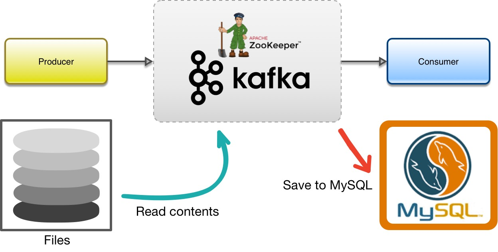
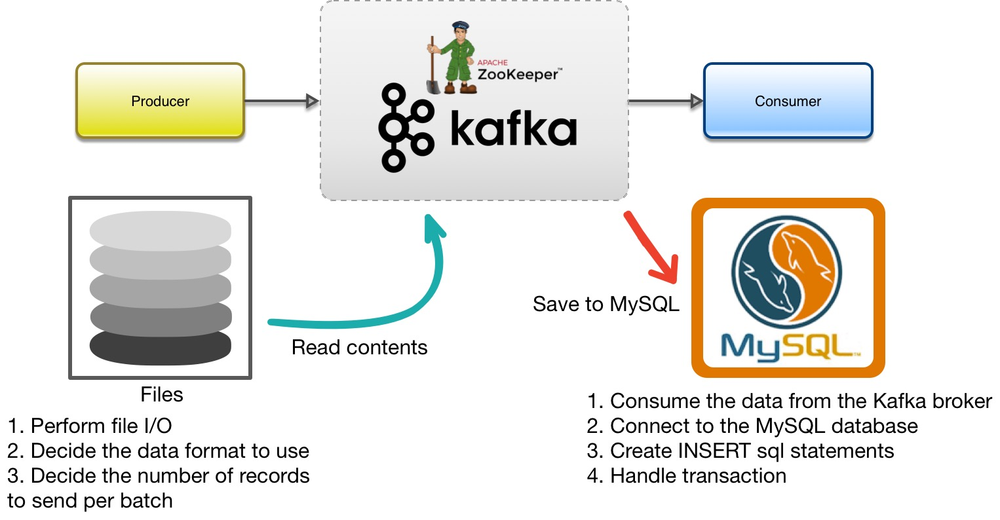
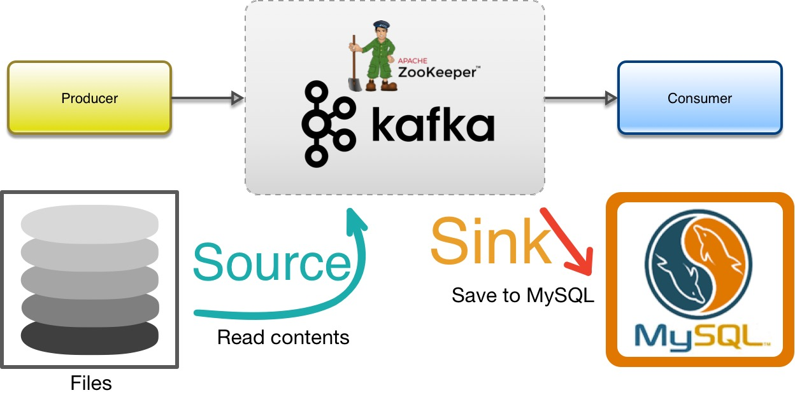
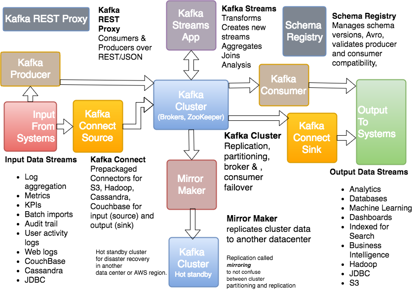

Introduction to Apache Kafka
About me ...
Jack of many trades, master of some ...
What is this all about?
- A brief introduction to Kafka and its ecosystem
What is Apache Kafka?
What is Apache Kafka?
- Kafka is a fast, scalable, durable, and fault-tolerant publish-subscribe messaging system
What are some of the use cases?
- Messaging
- Stream Processing
- Event Sourcing
- ETL (Extract Transform Load>
Basic Components
- Producer - sends data asynchronously
- Zookeeper - distributed synchronization of nodes
- Kafka Broker - stores the data
- Consumer - pulls data from the broker


Recap
- The fastest way to run Kafka is via Docker
- Kafka needs Zookeeper in order to run
- To produce a message: Define configuration, Create ProducerRecord, Send
- To consume a message: Define configuration, Subscribe to a topic, Poll
Kafka versus ActiveMQ
| Kafka | ActiveMQ | |
| Storage | With Retention Period | Messages are deleted after reading |
| Clustering Features | Simple but solid clustering features - Scaling, Replication, Partitioning | Complicated clustering architecture - topologies, load balancing |
| Performance | Does not | Degrades with additional consumers |
| Consumer | Pull | Push |
| Use Cases | Messaging, Streaming, Event Sourcing, ETL | Messaging |
Is that it?!
Kafka Connect
Kafka Connect
Kafka Connect
Kafka Connect
Kafka Connect

Kafka Ecosystem
| Resources | |
| Training Contents | https://github.com/clim/kafka-training.git |
| Tutorials | https://developer.confluent.io/learn-kafka |
| Binary | https://kafka.apache.org/downloads |